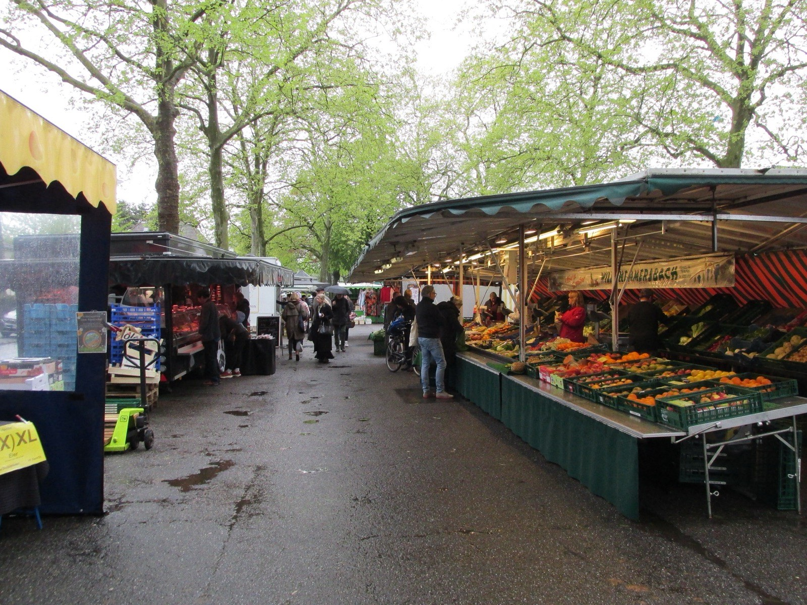
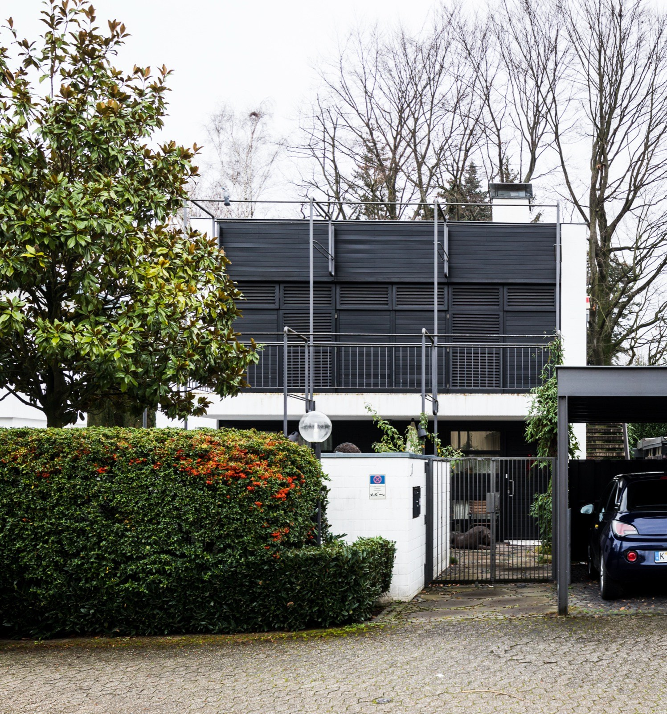

Immobilie in Köln-Weiden verkaufen?Neu kostet hier fast das Doppelte. Aufgeteilt so gut wie nichts mehr.
Zwei Aufschläge, die leicht verwechselt werden: Ein Neubau erzielt in Weiden 89 Prozent mehr je Quadratmeter als eine Bestandswohnung. Wer dagegen sein Mietshaus aufteilt und die Wohnungen einzeln verkauft, bekommt 2 Prozent — der niedrigste Wert in ganz Köln.
Was könnte Ihre Immobilie in Weiden erzielen?
In sechs Schritten zu einer realistischen Einschätzung. Kostenlos, unverbindlich und ohne Vertrag. Womit fangen wir an?
Andere Objektart wählenZwei Aufschläge, die leicht verwechselt werden
Der Grundstücksmarktbericht 2026 wertet für Weiden 158 beurkundete Wohnungsverkäufe des Jahres 2025 aus. Die große Mehrheit — 132 Fälle — sind gewöhnliche Weiterverkäufe aus dem Bestand, im Schnitt 3.368 Euro je Quadratmeter. Daneben stehen zwei kleinere Gruppen, und die erzählen sehr Verschiedenes.
Ein Neubau erzielte im selben Jahr 6.377 Euro je Quadratmeter, ermittelt aus 14 Verkäufen. Das sind 89 Prozent mehr als im Bestand — kölnweit der zweitgrößte Abstand nach Höhenberg. Für „neu" zahlt der Markt hier also fast das Doppelte.
Eine Wohnung, die zuvor aus einem Mietshaus herausgelöst wurde, kam dagegen auf 3.436 Euro, aus zwölf Verkäufen. Gegenüber dem Bestand sind das 2 Prozent — 68 Euro je Quadratmeter. Das ist der niedrigste Wert aller Kölner Stadtteile, für die diese Zahl überhaupt gebildet werden kann.
Warum so wenig? Weil der Aufschlag anderswo nicht aus der Aufteilung selbst kommt, sondern aus dem, was üblicherweise mit ihr einhergeht: eine sanierte, leer übergebene Wohnung in einem Viertel, in dem Eigentum knapp ist. In Weiden ist Eigentum nicht knapp. Wer hier eine Wohnung sucht, findet welche — und zahlt deshalb nichts extra dafür, dass sie gerade erst aus einem Mietshaus herausgelöst wurde.
Was eine Aufteilung in Weiden rechnerisch einbringt
Stellen Sie die gesamte Wohnfläche Ihres Hauses ein. Die Rechnung zeigt, was der statistische Aufschlag von 68 Euro je Quadratmeter für dieses Haus bedeuten würde — und was derselbe Fall in einem Stadtteil mit hohem Aufschlag ergäbe.
Alle Wohnungen des Hauses zusammen.
Dieselbe Aufteilung brächte in der Südstadt rund das 26-Fache.
Eine Größenordnung, keine Kalkulation. Der Weidener Wert beruht auf zwölf Verkäufen und ist entsprechend unsicher. Gegenzurechnen sind in jedem Fall die Kosten der Aufteilung — Abgeschlossenheitsbescheinigung, Teilungserklärung, Notar und Grundbuch fallen je Einheit an, nicht je Haus — sowie Ihre steuerliche Lage. Ob sich der Weg für Ihr Objekt trägt, rechnen wir kostenlos durch.
Wann sich das Aufteilen trotzdem rechnen kann
Erlaubt ist es: Nordrhein-Westfalen hat keine Verordnung nach § 250 Baugesetzbuch erlassen, mit der die Aufteilung bestehender Wohngebäude genehmigungspflichtig würde. Von dieser Möglichkeit haben nach der Übersicht des Deutschen Notarinstituts vom 20. Januar 2026 nur Bayern, Berlin und Hamburg Gebrauch gemacht. In Köln ist der Weg also offen — wie ausführlich auf der Seite zu Köln-Neustadt-Süd beschrieben, wo derselbe Schritt 31 Prozent Aufschlag bringt.
In Weiden ist die Rechnung eine andere. Bei 2 Prozent Aufschlag steht der Ertrag in keinem klaren Verhältnis mehr zum Aufwand, denn die Kosten der Aufteilung fallen je Wohnung an: Abgeschlossenheitsbescheinigung, Teilungserklärung mit Aufteilungsplan, Notar und Grundbuch. Ein Haus mit sechs Einheiten wird sechsmal beurkundet und sechsmal eingetragen, während der Mehrerlös sich auf dieselben sechs Einheiten verteilt.
Dazu kommt die Mieterschutzverordnung NRW vom 1. März 2025, die auch für Köln gilt: Bei umgewandelten und anschließend verkauften Wohnungen ist eine Kündigung wegen Eigenbedarfs oder zur wirtschaftlichen Verwertung erst acht Jahre nach dem Verkauf möglich statt der gesetzlichen drei. Für den Käufer heißt das: kein Einzug auf absehbare Zeit. Selbstnutzer scheiden damit aus, es bleiben Kapitalanleger — und die rechnen nach Mietrendite, nicht nach dem Quadratmeterpreis für bezugsfreie Wohnungen. Genau das erklärt, warum die zwölf Weidener Umwandlungsfälle so nah am Bestandswert liegen.
Drei Fälle, in denen es sich dennoch lohnen kann
- Die Wohnungen stehen leer oder werden frei — dann greift die Sperrfrist ins Leere und Selbstnutzer kommen als Käufer in Frage.
- Das Haus soll innerhalb der Familie geteilt werden. Hier geht es nicht um den Mehrerlös, sondern darum, überhaupt teilbare Anteile zu schaffen.
- Als Ganzes findet sich kein Käufer. Ein Mehrfamilienhaus in Weiden verlangt Eigenkapital, das nicht viele mitbringen; sechs einzelne Wohnungen sprechen einen deutlich größeren Kreis an. Dann ist die Aufteilung kein Renditehebel, sondern eine Frage der Verkäuflichkeit.
Was in Ihrem Fall gilt, hängt an Mieterstruktur, Restlaufzeiten, Zustand und Ihrer Steuerlast. Die Marktseite rechnen wir Ihnen vor; die rechtliche Prüfung gehört zu Notar oder Fachanwalt.
Mehrfamilienhaus in Weiden — im Ganzen verkaufen oder aufteilen?
Wir rechnen beide Wege durch und sagen Ihnen, welcher bei Ihrem Objekt trägt. Kostenlos und unverbindlich.
Marktdaten Köln-Weiden
- Bodenrichtwert
- 850–1.450 €/m²Median 1.260 · 11 Zonen · Stichtag 1.1.2026
- Wohnung, Weiterverkauf
- 3.368 €/m²132 Kaufverträge 2025
- Wohnung, Neubau
- 6.377 €/m²14 Kaufverträge 2025
- Wohnung, nach Aufteilung
- 3.436 €/m²12 Kaufverträge 2025
- Wohnungsbestand
- 9.413 Wohnungen86,4 m² im Schnitt · 79 Neubauten 2025
Amtliche Werte — Quellen und Methodik.
Elf Bodenrichtwertzonen auf einem Stadtteil
BORIS NRW teilt Weiden zum 1. Januar 2026 in elf Wohnbauland-Zonen — mehr haben nur Dellbrück, Rath/Heumar und Brück. Die Werte reichen von 850 bis 1.450 Euro je Quadratmeter, der Median liegt bei 1.260. Zwischen der günstigsten und der teuersten Zone liegen damit 71 Prozent.
Das ist der praktisch wichtigste Unterschied zu den Innenstadtlagen. In Köln-Neustadt-Nord etwa gibt es drei Zonen mit 330 Euro Abstand; dort entscheidet vor allem das Gebäude über den Preis. In Weiden entscheidet zuerst die Adresse. Ein Grundstück von 400 Quadratmetern ist je nach Zone rechnerisch 340.000 oder 580.000 Euro wert — bei identischem Haus darauf.
Wer hier eine Bewertung liest, in der ein Durchschnittswert für „Weiden" steht, sollte nachfragen, welche Zone gemeint ist. Wir prüfen das anhand der Adresse, bevor wir rechnen.
Was die Lagen unterscheidet
Der alte Ortskern um den Emil-Schreiterer-Platz mit Wochenmarkt und kleinteiligem Bestand ist die Lage mit dem meisten Charakter. Wer hier verkauft, verkauft Ortsleben in Gehweite — ein Argument, das in die ersten Zeilen des Exposés gehört, nicht in die letzten.
Die Bahnstrecke Köln–Aachen, 1840/41 auf einem hohen Damm gebaut, zerschneidet den Stadtteil bis heute. Sie ist der Grund für einen Teil der Zonenunterschiede: Was auf welcher Seite des Damms liegt, macht bei Ruhe und Wegen einen Unterschied, den kein Durchschnittswert abbildet.
Rund um Weiden-West zählt die Stadtbahn, die seit Juni 2006 wieder bis zum Haltepunkt fährt. Für Pendler nach Köln ist das der Grund, hier statt weiter westlich zu suchen — und ein Punkt, der in Anzeigen erstaunlich oft fehlt.
Rund um das Rhein-Center mit seinen 180 Geschäften deckt sich der tägliche Bedarf im Stadtteil selbst. Das ist für ältere Käufer ein handfestes Argument, weil es Wege ohne Auto möglich macht.
Richtwerte, kein Preisschild. Für Ihr Objekt zählt der Zustand im Detail — dafür rechnen wir kostenlos eine Wertindikation oder kommen persönlich vorbei.
Wer in Weiden kauft, sucht etwas anderes als in der Innenstadt

Die Zahlen zeichnen ein klares Bild. Eine Wohnung in Weiden misst im Schnitt 86,4 Quadratmeter — gut neun mehr als im Kölner Mittel von 77,3 und mehr als zwanzig mehr als in Köln-Neustadt-Süd, wo 65,1 Quadratmeter der Normalfall sind. Auf den einzelnen Bewohner entfallen 45,2 Quadratmeter gegenüber 40,6 stadtweit.
16,5 Prozent der Haushalte leben mit Kindern. In Köln insgesamt sind es 17,7 Prozent, in den Innenstadtteilen dagegen unter elf. Weiden ist damit kein Ausreißer nach oben, aber im Vergleich zu den Lagen innerhalb der Ringe ein Familienstadtteil. Dazu passt das Durchschnittsalter von 45,1 Jahren, gut zwei Jahre über dem Kölner Wert.
Praktisch heißt das für den Verkauf: Die Fragen, die hier zuerst kommen, sind andere. Nicht Deckenhöhe und Stuck, sondern Zahl der Zimmer, Garten oder Terrasse, Stellplatz, Schulweg, Zustand der Heizung. Drei Schulen liegen im Stadtteil — die Grundschulen Albert-Schweitzer und Clarenhof sowie das Georg-Büchner-Gymnasium mit rund 1.350 Schülerinnen und Schülern. Wer eine Familienimmobilie verkauft, sollte den Schulweg in Minuten angeben können.
Nur 1,0 Prozent des Wohnungsbestands sind öffentlich gefördert, stadtweit 6,2 Prozent. Neu gebaut wurde 2025 wenig: 79 Wohnungen im ganzen Stadtteil. Wer eine gepflegte Bestandsimmobilie anbietet, hat deshalb wenig unmittelbare Konkurrenz — die 132 Weiterverkäufe des Jahres sind ein stetiger, aber kein überlaufener Markt.
Der Bestand selbst erklärt sich aus der Geschichte: Weiden wuchs aus einem Dorf am westlichen Stadtrand. Die 1840/41 gebaute Bahnstrecke Köln–Aachen zerschnitt mit ihrem Damm die alte Flurverbindung nach Lövenich; erst der Bahnhof von 1870 löste den Ort von der Aachener Straße als einzigem Verkehrsweg und ließ ihn in Richtung der Gleise wachsen. Was danach entstand — Nachkriegsjahrzehnte, Siedlungsbau, Einfamilienhäuser — bildet heute den Kern dessen, was verkauft wird.
Auch tätig im Stadtbezirk Lindenthal und Umgebung:
Was Eigentümer in Weiden am häufigsten fragen
Nach den Zahlen von 2025 eher nicht. Der Erstverkauf nach Aufteilung lag in Weiden bei 3.436 Euro je Quadratmeter gegenüber 3.368 Euro im gewöhnlichen Weiterverkauf — zwei Prozent Unterschied, der niedrigste Wert aller Kölner Stadtteile mit auswertbarer Fallzahl. Die Kosten der Aufteilung fallen dagegen je Wohnung an: Abgeschlossenheitsbescheinigung, Teilungserklärung, Notar, Grundbuch. Sinnvoll bleibt der Weg trotzdem in drei Fällen: wenn die Wohnungen leer sind oder frei werden, wenn innerhalb der Familie geteilt werden soll, oder wenn sich für das Haus als Ganzes schlicht kein Käufer findet.
Weil der Aufschlag anderswo nicht aus der Aufteilung selbst stammt, sondern aus dem, was mit ihr einhergeht: eine sanierte, leer übergebene Wohnung in einem Viertel, in dem Eigentum knapp ist. In Köln-Neustadt-Süd sind das 31 Prozent, in Mülheim 33. In Weiden ist Eigentum nicht knapp — wer hier eine Wohnung sucht, findet welche. Hinzu kommt die Mieterschutzverordnung NRW vom 1. März 2025: Bei umgewandelten und verkauften Wohnungen ist eine Eigenbedarfskündigung in Köln erst acht Jahre nach dem Verkauf möglich. Das schließt Selbstnutzer als Käufer praktisch aus, und Kapitalanleger zahlen keinen Aufschlag für Bezugsfreiheit, die es nicht gibt.
Das lässt sich ohne die genaue Adresse nicht beantworten, und das ist in Weiden wichtiger als anderswo. BORIS NRW weist zum 1. Januar 2026 elf Wohnbauland-Zonen zwischen 850 und 1.450 Euro je Quadratmeter aus — mehr Zonen haben nur Dellbrück, Rath/Heumar und Brück. Zwischen günstigster und teuerster Zone liegen 71 Prozent. Ein Grundstück von 400 Quadratmetern ist je nach Zone rechnerisch 340.000 oder 580.000 Euro wert, bei identischem Haus darauf. Wer Ihnen einen Durchschnittswert für „Weiden" nennt, hat die entscheidende Frage übersprungen.
Der Grundstücksmarktbericht bildet für Weiden keinen eigenen Hausdurchschnitt, weil Häuser nicht in ausreichender Zahl und Vergleichbarkeit gehandelt werden. Bei einem Haus zählt ohnehin das Gesamtobjekt: Grundstücksgröße und Zuschnitt, Bodenrichtwertzone, Baujahr und Sanierungsstand, Energieträger und Dämmung, Zimmerzahl und Grundriss, Garten, Terrasse, Stellplätze sowie Ausbaureserven im Dach. Der Bodenwert allein trägt bei einem Weidener Einfamilienhaus einen erheblichen Teil des Gesamtwerts — was den Blick auf die richtige Zone umso wichtiger macht.
Nein. Die 6.377 Euro je Quadratmeter stammen aus 14 Erstverkäufen neu errichteter Wohnungen mit aktuellem Energiestandard und moderner Haustechnik. Für eine Bestandsimmobilie ist das keine Vergleichsgröße, sondern eine andere Warenart. Wer den Neubauwert als Argument heranzieht, verliert die aufmerksamsten Interessenten in den ersten beiden Wochen — und die sind es, die einen guten Preis überhaupt erst möglich machen. Eine Modernisierung kann den Abstand verkleinern; ob sie sich rechnet, hängt davon ab, ob sie mehr einbringt als sie kostet.
Überwiegend Menschen, die Platz suchen. Die durchschnittliche Wohnung misst hier 86,4 Quadratmeter gegenüber 77,3 im Kölner Mittel und 65,1 in Köln-Neustadt-Süd. 16,5 Prozent der Haushalte leben mit Kindern — in den Innenstadtteilen sind es unter elf. Das Durchschnittsalter liegt bei 45,1 Jahren, gut zwei über dem Kölner Wert. Entsprechend zählen Zimmerzahl, Garten, Stellplatz, Schulweg und Heizung mehr als Altbaudetails. Drei Schulen liegen im Stadtteil, das Rhein-Center mit 180 Geschäften deckt den täglichen Bedarf, und die Stadtbahn fährt seit Juni 2006 wieder bis Weiden-West.
Das entscheidet sich am einzelnen Posten, nicht grundsätzlich. Die Frage lautet immer: Bringt diese Maßnahme mehr ein, als sie kostet? Bei Heizung und Energieausweis lohnt sich zumindest Klarheit — beides wird in Weiden früh gefragt, weil viele Käufer hier langfristig selbst einziehen. Kosmetische Arbeiten zahlen sich häufiger aus als große Umbauten, weil ein gepflegter Gesamteindruck die Besichtigung trägt. Wir sehen uns das Objekt an und sagen Ihnen, was sich lohnt und was Sie sich sparen können.
Die 1840/41 gebaute Strecke Köln–Aachen läuft auf einem Damm durch den Stadtteil und ist einer der Gründe für die elf verschiedenen Bodenrichtwertzonen. Pauschal lässt sich das nicht beziffern: Entscheidend sind Entfernung, Ausrichtung der Wohnräume, Fenster und vorhandene Schutzmaßnahmen. Wichtig ist, das Thema im Verkauf nicht abzuwarten. Käufer prüfen die Lage ohnehin, und eine offene Angabe wirkt sich günstiger aus als eine Frage, die erst bei der zweiten Besichtigung gestellt wird.
2025 wurden 158 Kaufverträge über Eigentumswohnungen beurkundet, davon 132 Weiterverkäufe aus dem Bestand. Das ist ein stetiger Markt, aber kein überlaufener: Neu gebaut wurden im selben Jahr nur 79 Wohnungen im ganzen Stadtteil. Für Verkäufer einer gepflegten Bestandsimmobilie bedeutet das wenig unmittelbare Konkurrenz. An fehlender Nachfrage scheitert hier selten etwas — häufiger am Einstiegspreis oder an Unterlagen, die erst während der Vermarktung beschafft werden. Unsere Unterlagencheckliste zeigt, was vorab zusammengehört.
Nein. Die Bewertungsanfrage ist kostenlos und unverbindlich. Durch die Anfrage entsteht kein Maklerauftrag.
Bildnachweis: Wochenmarkt am Emil-Schreiterer-Platz: GeorgDerReisende, CC BY-SA 4.0 · Einfamilienhaus Droste-Hülshoff-Straße: Elke Wetzig, CC BY-SA 4.0 · Ortskern Goethestraße: Bernhard Waldau, CC BY-SA 3.0 · Heilig-Geist-Kirche: CEphoto, Uwe Aranas, CC BY-SA 3.0, alle über Wikimedia Commons. Marktdaten: Gutachterausschuss für Grundstückswerte in der Stadt Köln (Grundstücksmarktbericht 2026, Berichtsjahr 2025), BORIS NRW zum 1. Januar 2026, Stadt Köln – Amt für Stadtentwicklung und Statistik (Einwohner, Haushalte und Wohnungsbestand zum 31. Dezember 2025). Rechtsstand: § 250 BauGB nach der Übersicht des Deutschen Notarinstituts vom 20. Januar 2026, Mieterschutzverordnung NRW vom 1. März 2025. Keine Rechtsberatung.